While so much is done behind a computer screen nowadays, I also very much like to create things using my hands and sometimes using more powerful or precise tools. Some of the more photogenic examples below (photos from a complete strip-down and rebuild of my house are not photogenic enough to share here...):
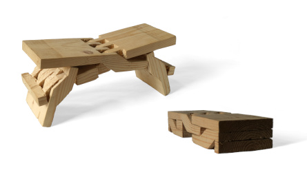
Luban stoolCarved from a single piece of wood that is still a single piece but now transformable.
It is said that the Luban stool used to be the magnus opus piece that craftsmen in ancient China had to make before finishing their education. That was enough of a challenge for me to give it a try. It took only 3 days of chiseling.
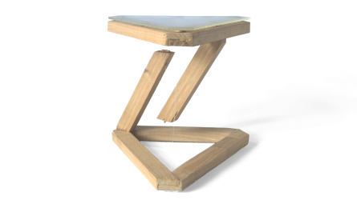
Floating tableSuspended above itself by four almost invisible fishing lines, this free-standing small table appears to be floating in mid-air. Almost magic...
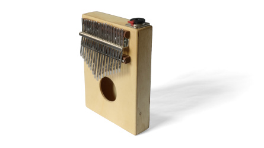
KalimbaA modern version of a lamellophone that is on UNESCO's Representative List of Intangible Cultural Heritage of Humanity (originally from Malawi and Zimbabwe).
I made one with a piezo pickup inside, so I can hook it up to a mixer and record directly.
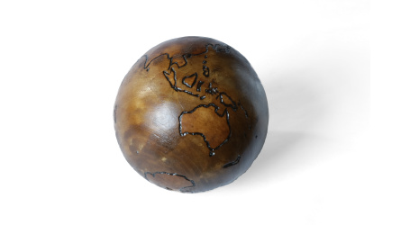
Solid wooden globeA solid-wooden globe, routed from the trunk of a basswood tree that fell over the path in front of my house during an autumn storm.
First, I had to build a round-ball-making jig and practice a bit. Cartography was transferred to paper gores, glued to the ball and burned-through using te soldering iron. After sanding off the paper and finishing with lacquer, the result is a pretty nice 12 cm diameter solid globe!
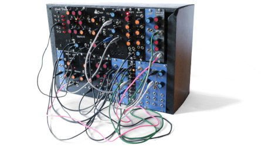
Modular synthesizerInspired by awesome online performances from Colin Benders and "mad professor" Look Mum No Computer, I wanted to have my own modular synthesizer.
So, after many hours researching, ordering strip-board, lots of resistors, capacitors, ic's and other small stuff and some more hours of soldering and testing: Here it is! And it sounds like this.
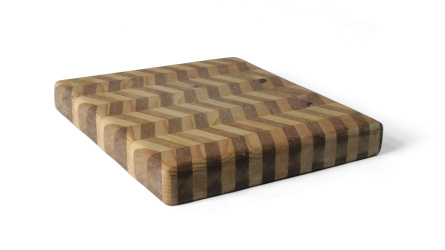
Wavy cutting boardCutting thin strips of wood, clamping them together with glue in-between, planing them down, cutting them at an angle, glueing/clamping them back together, planing down again, rounding off the edges with the router and finally a lot of sanding. That is how this cutting board was made.
Combination of hard and soft wood. 19 x 17 cm.
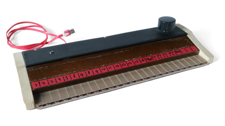
Arduino MIDI controllerAfter upgrading my old studio mixer to a powerful XR18 digital mixer, I missed having a simple way to change the levels without starting up a computer or smartphone. So I built this controller that sends out MIDI CC messages to control the XR18.
One potentiometer plus an analogue resistance strip built from PCB material and lots of resistors control an Arduino attiny85 micro-controller. All that was then left was to program an Arduino sketch to read it all out and send proper MIDI messages to an output pin.
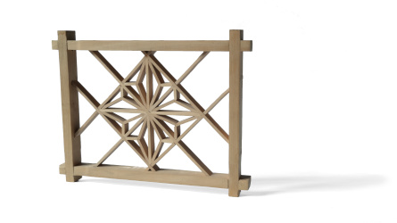
Kumiko AsanohaMy first try at creating an object using the ancient Japanese woodworking art known as Kumiko.
I started from scratch with a piece of beech wood from the forest, cut that into thin strips, planed them down to 3 mm thickness and built jigs for the exact angles at the ends. Then all pieces of the puzzle could be made and press-fitted together.
Symbolizing growth, vigor, resilience and as a result prosperity, the Asanoha (hemp) pattern was the logical one to create during the first lock-down.
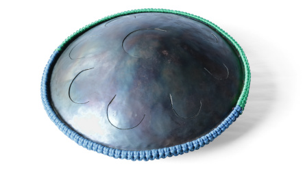
Steel tongue drumAfter stumbling upon a tongue drum performance in the basement of a hostel in Sofia, Bulgaria many years ago, the instrument has intrigued me.
Wanting to build one myself, I ordered a 50 x 100 cm sheet of steel, cut it in two rounds, put in ear plugs and started pounding using a wooden hammer until the shape was concave and just right. Then the shells were heat tempered using a gas torch (turning blue in te process). Finally, both shells were glued together and the tongues cut and tuned in mini steps. And a rope braid made to finish the edge nicely. Fitted with a piezo pickup element, it can be recorded directly.
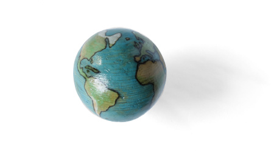
Solid wooden globeAnother solid wooden globe. This one 6.5 cm diameter and the map drawn on by hand in watercolors.
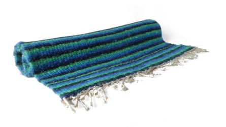
Woolen rugHand-woven rug to learn about larger-scale weaving.
First, I had to build a pretty large (1 x 2 meter) weaving loom, complete with a heddle bar and a shuttle, from leftover pieces of wood. Then it was just a few days of weaving until my stock of wool was depleted. The result is a thick, warm and pretty looking 66 x 110 cm rug.
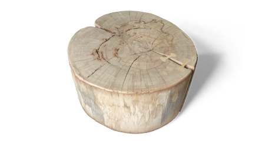
Tree coffee table60 cm diameter piece of beech wood from the forest. It had been drying while already in use as a very rough chainsaw-cut table for a few years. Once stable, I planed the top, rounded-over the edges and bridged the one large crack with two bone-shaped pieces of different wood just for fun.
Sitting on large caster wheels this is one awesome, indestructible coffee table.
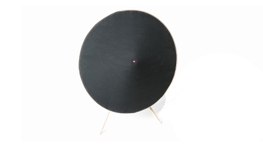
Beoplay A9 lookalike Bluetooth loudspeakerA clone of the fabulous looking round loudspeaker from Bang & Olufsen.
This 62 cm diameter cone-shaped thing houses 2 full-range loudspeakers, one woofer and a Bluetooth amplifier module. It is the perfect low-energy-use good-looking streaming loudspeaker for listening to podcasts or wireless computer audio.
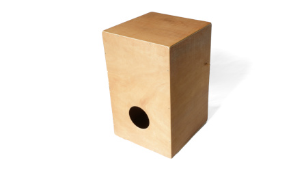
CajonComplete drum kit sound in a square box.
The cabinet is made from thin sheets of plywood. The front panel is very thin and partly loose so it can vibrate. It has adjustable snare springs on the inside. The back has a tuned hole for a nice, deep bassy kick.
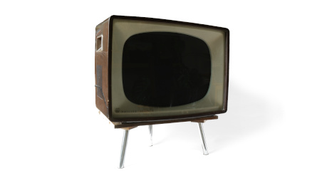
Vintage TV with modern insideThe shell of this TV was a barn find. It had been sitting under a thick blanket of dust for many years.
I gutted the shell of it's dangerous old glass tube and defective electronics. Then I put an LCD inside and added a Chrome-cast to the input. To finish the thing off, I added a base with style-correct legs for the TV to sit on and connected the original power switch so that the look and feel are completely original.
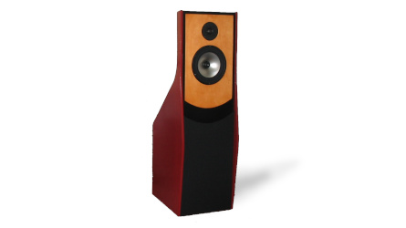
Linkwitz Labs Orion clone:The famous dipole loudspeaker by Siegfried Linkwitz that started my journey into fully active dispersion-controlled loudspeaker system design.
I built this clone using slightly cheaper components than the original, as I did not need very high output-levels because I want to stay friends with my neighbors. It turned out really well.